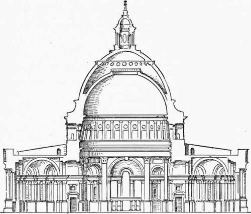
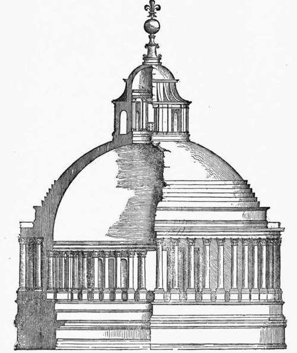

Jones And Wren. Part 4
Description
This section is from the book "Character Of Renaissance Architecture", by Charles Herbert Moore. Also available from Amazon: Character of Renaissance Architecture.
Jones And Wren. Part 4
An entirely new structure was now decided on, and Wren was directed to " contrive a Fabrick of moderate Bulk, but of good Proportions; a convenient Quire, with a Vestibule and Porticoes, and a Dome conspicuous above the Houses. A long Body with aisles was thought impertinent, our Religion not using Processions." 2
It is difficult from the statements in Parentalia clearly to identify Wren's different drawings which have been preserved, and to reconcile either the statements or the drawings with what is said by more recent writers, who do not always agree among themselves. The drawings embody widely different schemes which were the results of so many attempts to meet the wishes of the king and court on the one hand, and those of the citizens on the other. Of these there are two sets which may be considered as the principal ones.
The first of these has a novel plan based on that of the Greek cross, but having the reentrant external angles filled out to segmental curves struck from the corners of a square enclosing the whole. A great dome on a circular drum supported by eight piers rises over the crossing, a small dome on pendentives covers each of the spaces between the great circle and the curved enclosing walls; while the northern, southern, and western arms of the cross have each a square groined vault. The form of the vaulting over the eastern arm is not indicated on the plan, but the choir enclosure is shown in the form of a circle cut out on the east to open into the sanctuary, and on the west to communicate with the nave. The dome (Fig. 135) is in two shells of masonry, the inner one being hemispherical with a circular opening in its crown, and the outer one a pointed oval supporting a lantern. The drum is thick, and although the vault springs from very near the top, a strong continuous abutment in the form of a solid ring of masonry, with concave outline, is built up against it. The dome is kept solid up to the haunch of the inner shell, so that this inner shell is abundantly secured, while the outline of the outer shell, from the point where it clears the solid mass below, has a form that would exert a minimum of thrust, though it would hardly be secure without a binding chain. It is noticeable that the inner face of the drum is not vertical, but inclined inward in the form of a truncated cone, which considerably strengthens it against any tendency to yield to the force of thrust in the dome.
Fig. 135. — Section of Wren's rejected scheme for St. Paul's.
1 Parentalia, p. 278. 2 Ibid., p. 281.
The scheme was clearly based on the model of St. Peter's in Rome, to which frequent reference is made in Parentalia as having been in the mind of the architect as he developed his idea. The dome partakes of the character of Bramante's design on the one hand, and of that of Michael Angelo, as finally constructed, on the other. The likeness to Bramante's scheme (Fig. 23, p. 48) is in the form of the inner shell, and its adjustment to the supporting drum. The likeness as to adjustment is not, indeed, very close; for Wren has raised the springing so that it is almost at the top of the drum, but he has fortified it with a continuous abutment which, though of different outline, has substantially the same structural effect. The likeness to St. Peter's is further shown in the encircling order of the inner face of the drum, which occurs in both Bramante's scheme and in that of Michael Angelo. There can be little doubt that Wren had studied Bramante's design in Serlio's book, and had appreciated its structural merits. But he wished, in emulation of Michael Angelo, to make his dome externally more imposing, and he therefore raised its springing level as we see, and adopted from Michael Angelo's scheme the idea of a double dome. The external outline from the top of the drum to the haunch of the vault is too nearly the same as the corresponding part of Michael Angelo's design to be considered as an accidental coincidence. The structural difference between the two is indeed great, since the concave portion in Wren's design is a continuous ring, while in that of Michael Angelo it is an isolated and insignificant abutment. Wren's scheme is thus superior in point of constructive merit, since it provides continuous resistance to continuous thrust. It will be seen that the two shells of Wren's projected dome correspond to the inner and outer shells of Michael Angelo's model (Fig. 26, p. 54), and thus in reproducing the main idea of this model Wren merely omitted the middle shell. He thus gave a wider divergence to the two vaults as they rise than occurs in the actual dome of St. Peter's. He also omitted the well which in St. Peter's connects the two shells at the crown.
Fig. 23. — Bramante's dome for St. Peter's, from Serlio.
A single order of pilasters adorns both the interior and the exterior of the church itself, the one on the outside being raised on a high basement and crowned with a plain attic; and a portico in the form of a temple front, with its order raised on high pedestals, gives emphasis to the west facade.
This design appears to have been rejected, to Wren's great chagrin, as we learn from the following passage in Parentalia: " The surveyor in private conversation, always seem'd to set a higher value on this design, than any he had made before or since ; as what was labour'd with more study and success ; and, (had he not been over-rul'd by those, whom it was his duty to obey), what he would have put in execution with more Cheerfulness, and Satisfaction to himself. . . . But the Chapter, and some others of the Clergy thought the Model not enough of a Cathedral-fashion; to instance particularly, in that, the Quire was design'd circular, etc. . . . The Surveyor then turn'd his Thoughts to a Cathedral-form, (as they call'd it) but so rectified, as to reconcile, as near as possible, the Gothick to a better Manner of Architecture ; with a Cupola, and above that, instead of a Lantern, a lofty Spire, and large Porticoes."
Continue to: